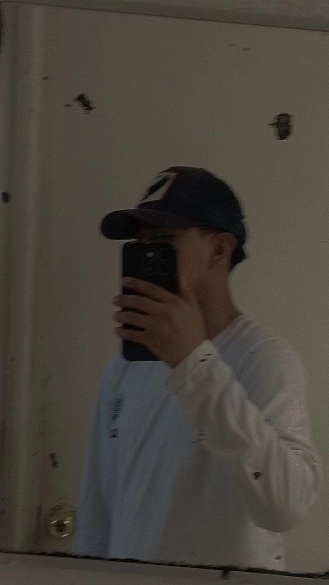

YO
YO
Mi nombre completo es Ezequiel Tequianez Espinosa soy estudiante del cecyt 3 estanislao ramirez ruiz, quiero estudiar la carrera de ingenieria en sistemas digitales ya que la mayoria de mi familia por parte de mi mamá estudiaron en el poli y la misma carrera y por lo que eh visto ganan muy bien y es algo que me interesa.
Me gusta mucho jugar futbol y los carros mi inspiracion es un familiar ya que le va muy bien en lo que le gusta hacer y por su forma de pensar, mi jugador favorito es Messi obvio le voy al FCB mi segundo jugador favorito es thiery henrry mis metas son terminar mi carrera en tiempo y forma me gusta mucho la computacion el tema de programar o usar codigos la verdad me gusta mucho ya que yo puedo controlar lo que quiero poner y lo que pasa lo que siento que me da un control total y me agrada
soy introvertido para los extrovertidos y extrovertido para lo introvertidos.
